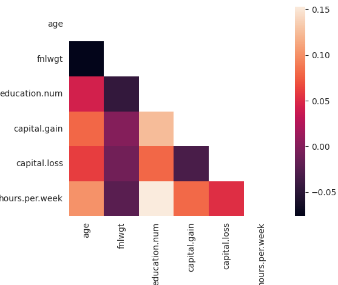
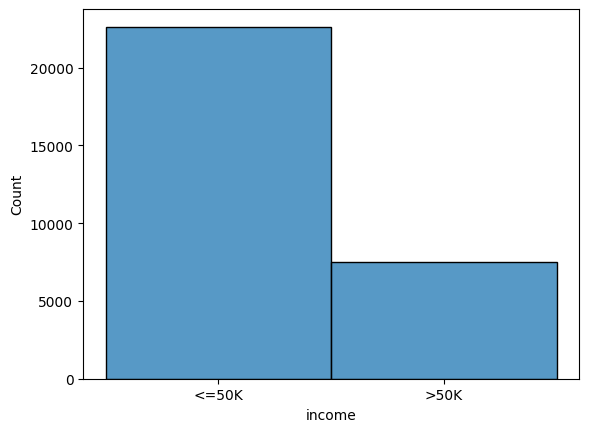

import pandas as pd
import seaborn as sns
import numpy as np
import os
from data import load_dataset
import plotterAdult census income
The data documentation is informative.
Preliminary analysis
adult = load_dataset("adult")
adultDownloading from https://www.kaggle.com/api/v1/datasets/download/uciml/adult-census-income?dataset_version_number=3&file_name=adult.csv...100%|██████████| 450k/450k [00:00<00:00, 1.03MB/s]Extracting zip of adult.csv...| age | workclass | fnlwgt | education | education.num | marital.status | occupation | relationship | race | sex | capital.gain | capital.loss | hours.per.week | native.country | income | |
|---|---|---|---|---|---|---|---|---|---|---|---|---|---|---|---|
| 0 | 90 | ? | 77053 | HS-grad | 9 | Widowed | ? | Not-in-family | White | Female | 0 | 4356 | 40 | United-States | <=50K |
| 1 | 82 | Private | 132870 | HS-grad | 9 | Widowed | Exec-managerial | Not-in-family | White | Female | 0 | 4356 | 18 | United-States | <=50K |
| 2 | 66 | ? | 186061 | Some-college | 10 | Widowed | ? | Unmarried | Black | Female | 0 | 4356 | 40 | United-States | <=50K |
| 3 | 54 | Private | 140359 | 7th-8th | 4 | Divorced | Machine-op-inspct | Unmarried | White | Female | 0 | 3900 | 40 | United-States | <=50K |
| 4 | 41 | Private | 264663 | Some-college | 10 | Separated | Prof-specialty | Own-child | White | Female | 0 | 3900 | 40 | United-States | <=50K |
| ... | ... | ... | ... | ... | ... | ... | ... | ... | ... | ... | ... | ... | ... | ... | ... |
| 32556 | 22 | Private | 310152 | Some-college | 10 | Never-married | Protective-serv | Not-in-family | White | Male | 0 | 0 | 40 | United-States | <=50K |
| 32557 | 27 | Private | 257302 | Assoc-acdm | 12 | Married-civ-spouse | Tech-support | Wife | White | Female | 0 | 0 | 38 | United-States | <=50K |
| 32558 | 40 | Private | 154374 | HS-grad | 9 | Married-civ-spouse | Machine-op-inspct | Husband | White | Male | 0 | 0 | 40 | United-States | >50K |
| 32559 | 58 | Private | 151910 | HS-grad | 9 | Widowed | Adm-clerical | Unmarried | White | Female | 0 | 0 | 40 | United-States | <=50K |
| 32560 | 22 | Private | 201490 | HS-grad | 9 | Never-married | Adm-clerical | Own-child | White | Male | 0 | 0 | 20 | United-States | <=50K |
32561 rows × 15 columns
adult.shape(32561, 15)adult.dtypesage int64
workclass object
fnlwgt int64
education object
education.num int64
marital.status object
occupation object
relationship object
race object
sex object
capital.gain int64
capital.loss int64
hours.per.week int64
native.country object
income object
dtype: objectCheck for missing values next. The documentation mentioned that missing values are represented by “?” in the dataset.
adult.isna().any()age False
workclass False
fnlwgt False
education False
education.num False
marital.status False
occupation False
relationship False
race False
sex False
capital.gain False
capital.loss False
hours.per.week False
native.country False
income False
dtype: booladult[adult.eq("?")].any()age False
workclass True
fnlwgt False
education False
education.num False
marital.status False
occupation True
relationship False
race False
sex False
capital.gain False
capital.loss False
hours.per.week False
native.country True
income False
dtype: booladult.workclass.value_counts()workclass
Private 22696
Self-emp-not-inc 2541
Local-gov 2093
? 1836
State-gov 1298
Self-emp-inc 1116
Federal-gov 960
Without-pay 14
Never-worked 7
Name: count, dtype: int64adult.eq() does not catch ? but if we inspect value_counts() for a specific feature, we note that ? does exist in the dataset. Why is that?
adult.workclass.astype("category").cat.categoriesIndex(['?', 'Federal-gov', 'Local-gov', 'Never-worked', 'Private',
'Self-emp-inc', 'Self-emp-not-inc', 'State-gov', 'Without-pay'],
dtype='object')I suspect there are leading and trailing whitespaces!
categorical_features = adult.select_dtypes(include="object").columns.to_list()
adult[categorical_features].apply(lambda col: col.str.strip())| workclass | education | marital.status | occupation | relationship | race | sex | native.country | income | |
|---|---|---|---|---|---|---|---|---|---|
| 0 | ? | HS-grad | Widowed | ? | Not-in-family | White | Female | United-States | <=50K |
| 1 | Private | HS-grad | Widowed | Exec-managerial | Not-in-family | White | Female | United-States | <=50K |
| 2 | ? | Some-college | Widowed | ? | Unmarried | Black | Female | United-States | <=50K |
| 3 | Private | 7th-8th | Divorced | Machine-op-inspct | Unmarried | White | Female | United-States | <=50K |
| 4 | Private | Some-college | Separated | Prof-specialty | Own-child | White | Female | United-States | <=50K |
| ... | ... | ... | ... | ... | ... | ... | ... | ... | ... |
| 32556 | Private | Some-college | Never-married | Protective-serv | Not-in-family | White | Male | United-States | <=50K |
| 32557 | Private | Assoc-acdm | Married-civ-spouse | Tech-support | Wife | White | Female | United-States | <=50K |
| 32558 | Private | HS-grad | Married-civ-spouse | Machine-op-inspct | Husband | White | Male | United-States | >50K |
| 32559 | Private | HS-grad | Widowed | Adm-clerical | Unmarried | White | Female | United-States | <=50K |
| 32560 | Private | HS-grad | Never-married | Adm-clerical | Own-child | White | Male | United-States | <=50K |
32561 rows × 9 columns
adult[adult.eq("?")].any()age False
workclass True
fnlwgt False
education False
education.num False
marital.status False
occupation True
relationship False
race False
sex False
capital.gain False
capital.loss False
hours.per.week False
native.country True
income False
dtype: booladult = adult.replace("?", value=np.nan)
adult.isna().any()age False
workclass True
fnlwgt False
education False
education.num False
marital.status False
occupation True
relationship False
race False
sex False
capital.gain False
capital.loss False
hours.per.week False
native.country True
income False
dtype: booladult = adult.dropna()
adult.shape(30162, 15)adult[categorical_features] = adult[categorical_features].astype("category")
adult.dtypesage int64
workclass category
fnlwgt int64
education category
education.num int64
marital.status category
occupation category
relationship category
race category
sex category
capital.gain int64
capital.loss int64
hours.per.week int64
native.country category
income category
dtype: objectadult[adult.duplicated()].shape(23, 15)23 rows with duplicate entries, let’s drop those.
adult = adult.drop_duplicates()
adult.shape(30139, 15)Finally, check for correlations in numerical features.
plotter.corr(adult.corr(numeric_only=True))
We see more strong positive and negative correlations amongst the numerical features. This is an opportunity to do some experimentation with feature selection and drop features which don’t bring anything to the table. For this analysis however, we don’t do anything further.
Distributional analysis
sns.histplot(data=adult, x="income")
The labels for the classes are not balanced.
Relational analysis
TODO
Categorical analysis
TODO